操作されるAndroid端末の準備
リモートで操作したい端末（Android 10以降）で一度だけ行います。同じWi‑Fiだけで使うならステップ4は省略できます。
1. アプリをインストール
- 操作される端末のブラウザで https://app.neulremote.com/install を開き、APKをインストールします。まだ Google Play にはないため、初回インストールで Play プロテクトに聞かれたら、そのページの手順に従ってください。
- Galaxyでインストールがブロックされる場合は、トラブルシューティングの「Galaxyでインストールがブロックされるとき」をご覧ください。
2. 接続待機をオンにする
- 操作される端末で NeulRemote を開くと、接続待機が自動で始まります。初回は通知の許可を求められるので「許可」をタップします。待機中・操作中は常に通知が表示されるため、気づかずに動くことはありません。
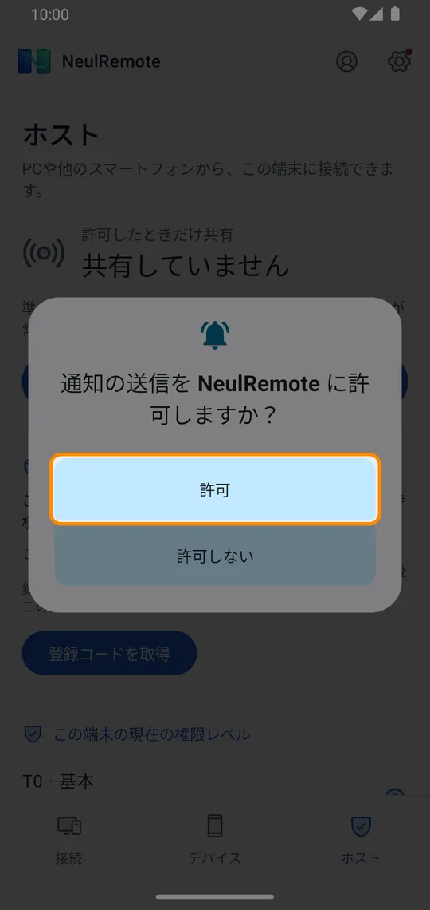
- 「ホスト」タブに「接続を待機中」と表示されたら準備完了です。止めるには「一時停止」をタップするか通知から止めます。止めた後はアプリを開き直しても停止したままで、「接続待機を開始」を押すと再開します。
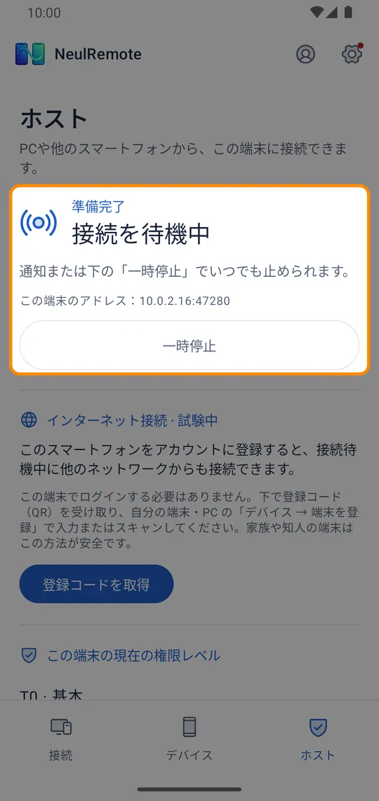
- 他の端末の操作にだけ使う端末では、設定 →「アプリを開いたら接続待機を自動で開始」をオフにします。その場合は「ホスト」タブの「接続待機を開始」で手動で始めます。
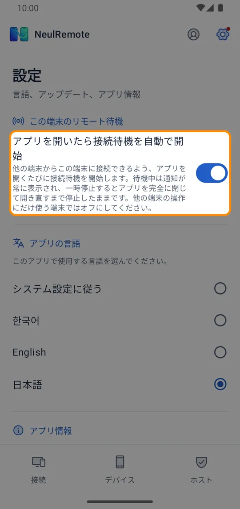
3. リモート操作を許可（標準レベル T0）
- 標準レベル（T0）では接続のたびに端末で画面共有を許可し、リモートタッチを受けるには NeulRemote のユーザー補助をオンにします。
- 基本レベル（T0）の遠隔タッチやボタン操作は、NeulRemote のユーザー補助で行います。できること・しないことを確認してボタンをタップします。
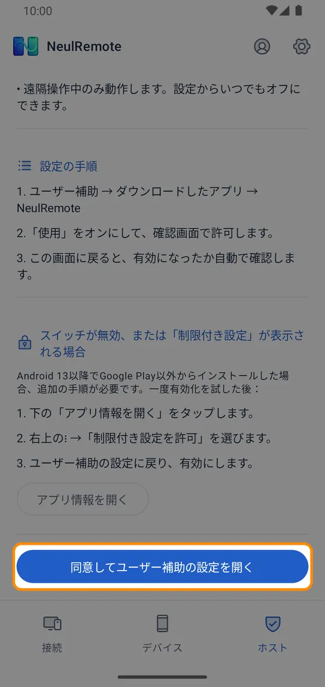
- 設定のユーザー補助で NeulRemote をタップします。Samsung は「インストール済みアプリ」、その他の多くの端末は「ダウンロードしたアプリ」にあります。
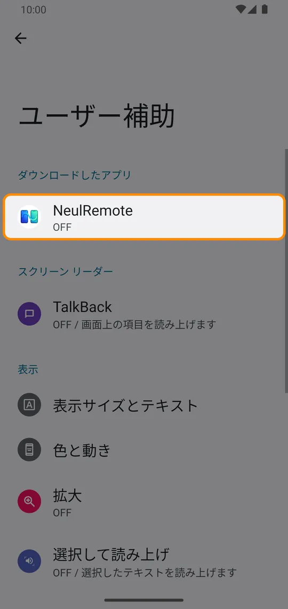
- 「NeulRemoteを使用」をオンにします。
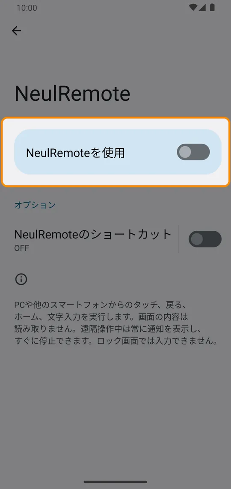
- 確認画面で「許可」をタップし、NeulRemote に戻ります。画面の内容は読み取らず、遠隔操作中だけ入力します。
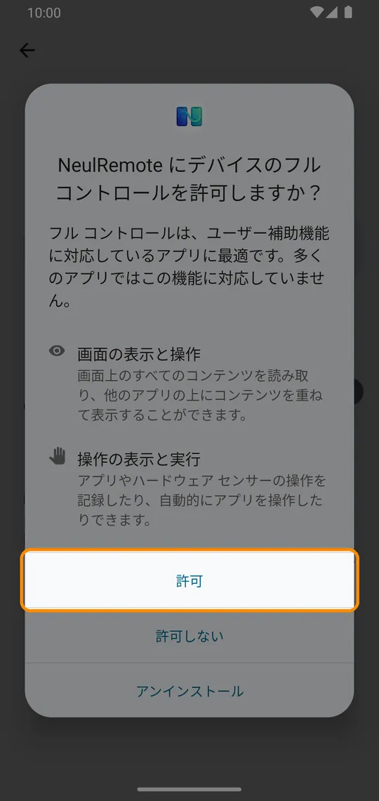
- 「制限付き設定」が表示されたら（Google Play 以外からインストール、Android 13 以降）、「ユーザー補助をオンにできないとき」の案内に従ってください。
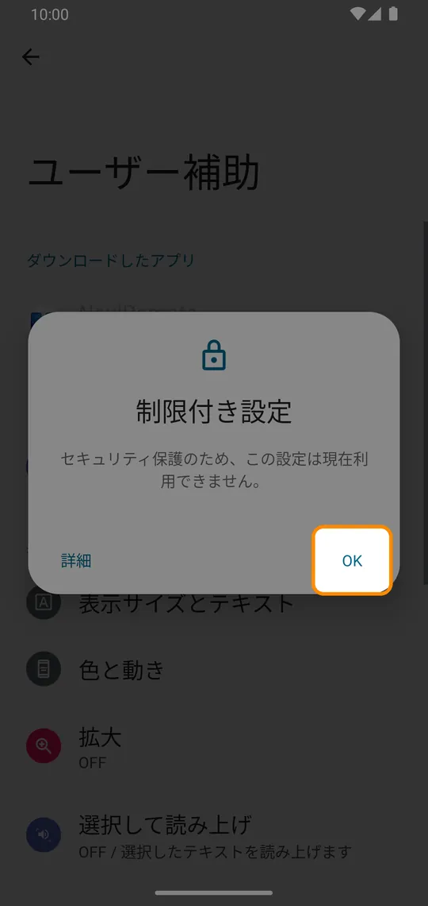
任意: Shizukuでもっと便利に（T2）
- 無料の Shizuku アプリをインストールして開き、「ワイヤレスデバッグで開始」の「ペアリング」をタップします。ペアリングは最初の1回だけです。
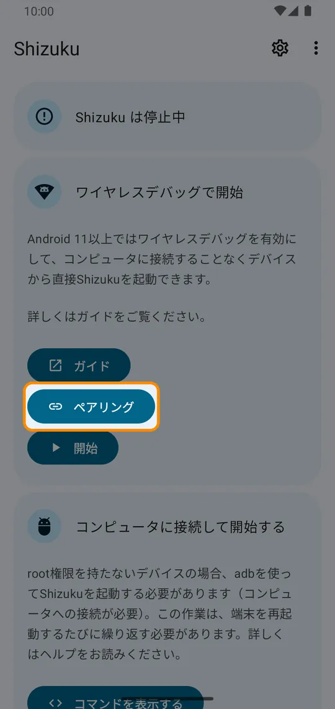
- 設定 → 開発者向けオプション → ワイヤレス デバッグをオンにします。このネットワークで許可するか聞かれたら「許可」をタップします。（開発者向けオプションは、デバイス情報のビルド番号を7回タップすると表示されます）
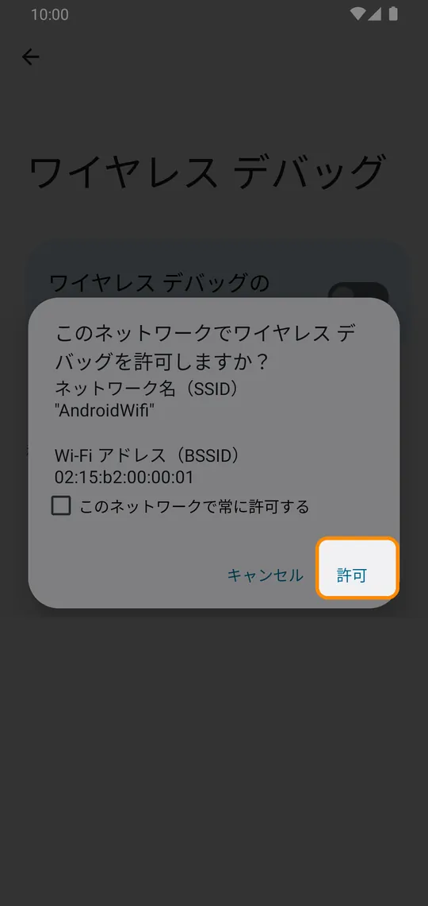
- 「ペア設定コードによるデバイスのペア設定」をタップします。
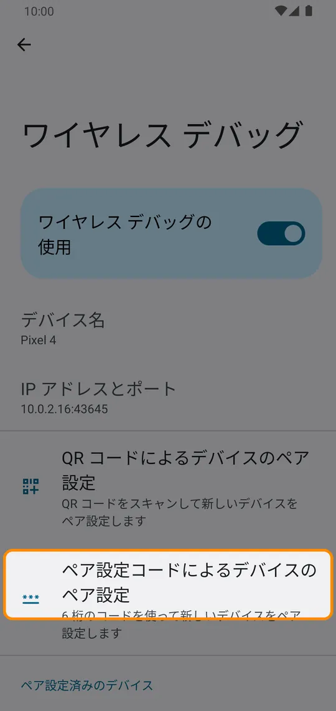
- 表示された6桁のコードを、Shizuku の通知のペアリングコード入力欄に入れます。通知が見えないときは通知パネルを下ろします。
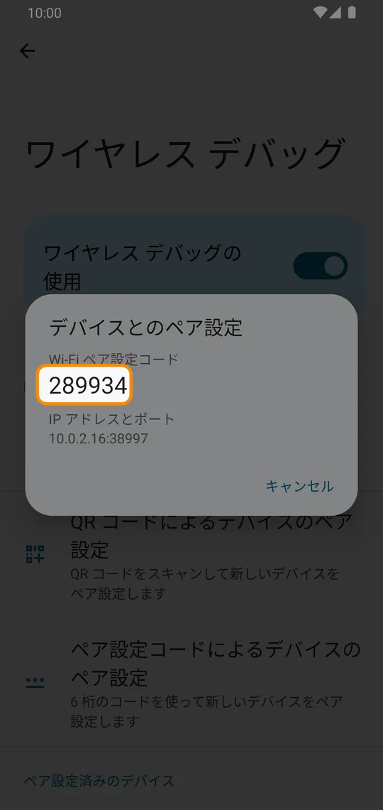
- Shizuku に戻って「開始」をタップします。端末を再起動したら、この手順だけやり直します。
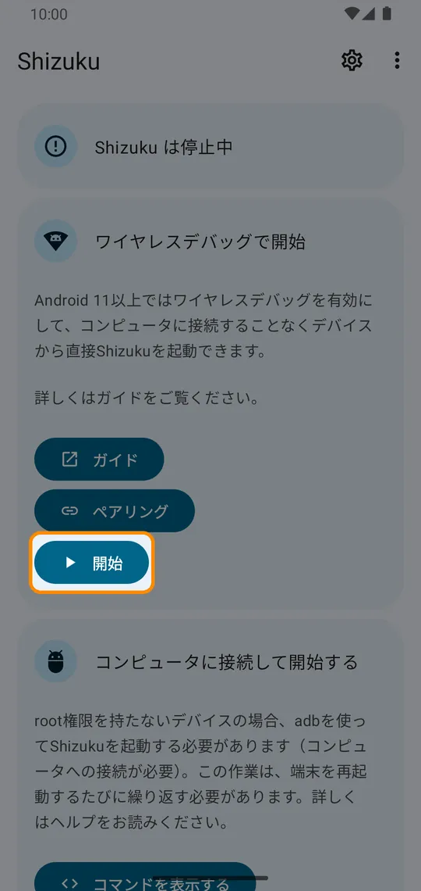
- NeulRemote の「Shizukuの使用を許可」をタップし、「常に許可」を選ぶと T2 になります。以降の接続では毎回の画面共有の許可が不要になります。
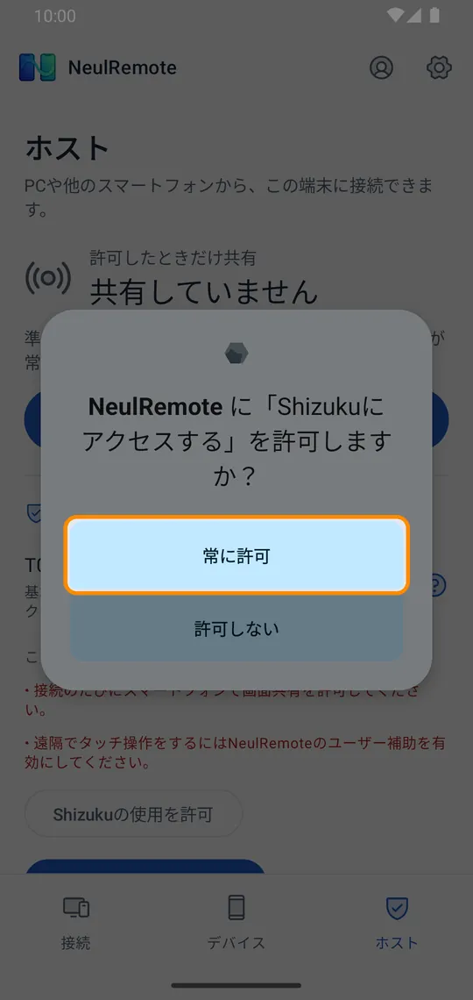
任意: 別の端末でShizukuを起動（USB、パソコン不要）
- NeulRemote が入った端末で「接続」タブ →「USB で他の端末を手伝う」を開き、2台をケーブルでつなぎます。
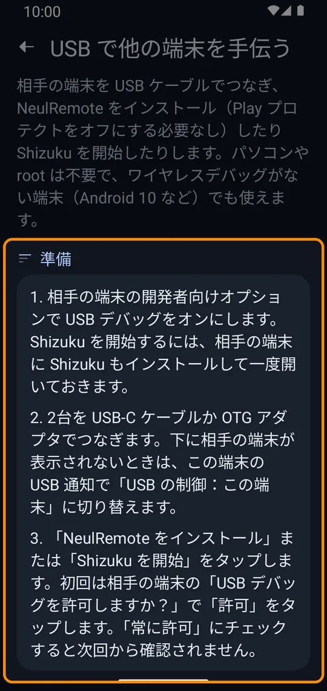
- ケーブルをつなぐと、この端末に「NeulRemote を開いて…を処理しますか？」が表示されます。「OK」をタップします（「常に NeulRemote を開く」を選ぶと次回から確認されません）。代わりに USB デバイスへのアクセス許可を求められたら、それも「OK」です。（写真は韓国語の Galaxy の画面）
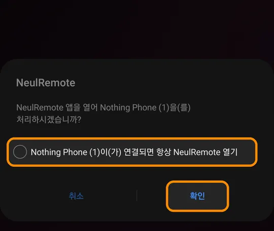
- 相手の端末が「接続中の端末」に表示されたら「Shizuku を開始」をタップします。名前はメーカーとモデルで表示されます（例: Nothing Phone (1)、Galaxy は SAMSUNG Android）。
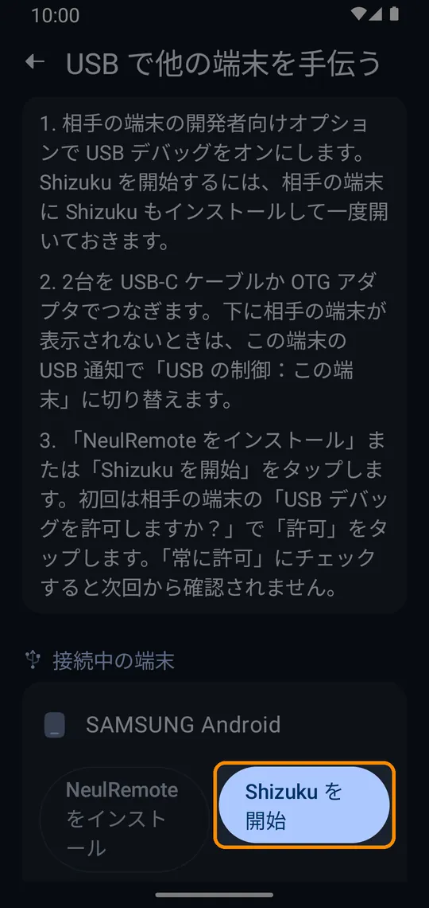
- 相手の端末に表示される「USB デバッグを許可しますか？」で「許可」をタップします（この端末にもその案内が表示されます）。「このパソコンからの USB デバッグを常に許可する」にチェックすると次回から確認されません。
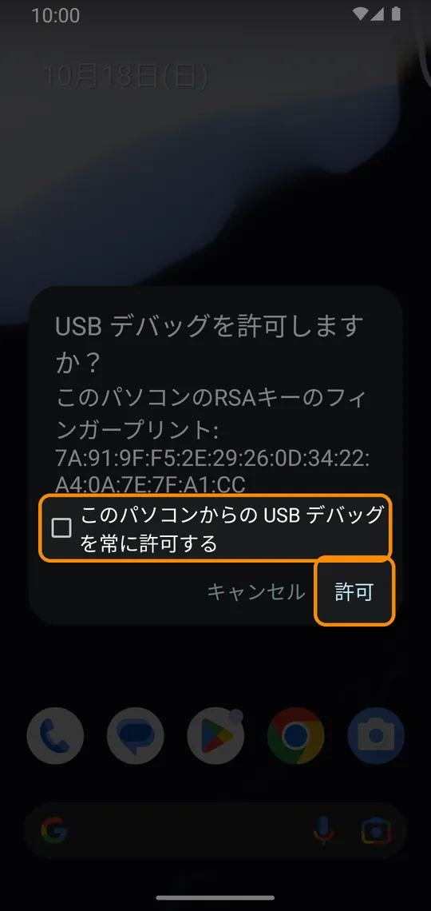
- この端末に「Shizuku を開始しました」と表示されたら完了です。ケーブルを抜いても、相手の端末を再起動するまで動作します。
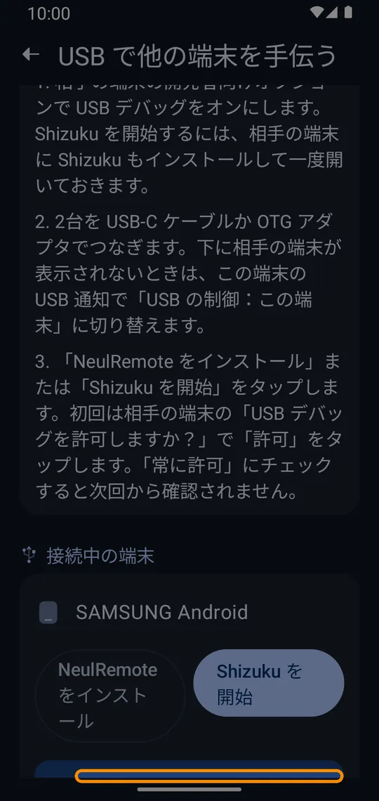
- 相手の端末の NeulRemote「ホスト」タブの権限レベルが「T2 · Shizuku」になります。初回は「Shizukuの使用を許可」をタップして許可します。
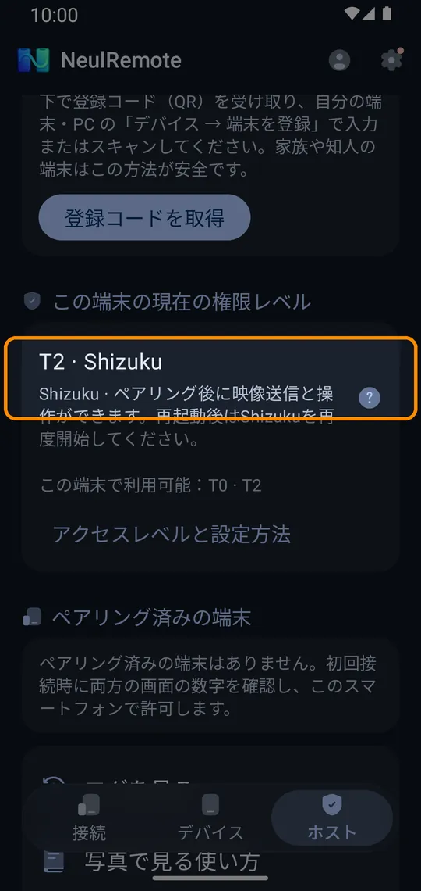
4. インターネット経由で接続するには: アカウントに登録
- 操作する側の機器で NeulRemote のアカウントを作成するかログインします（Androidアプリは プロフィール、Webアプリは最初の画面）。
- 操作される端末の ホスト タブ → インターネットリモート接続 → 登録コードを取得 を押すと、6桁のコードとQRが表示されます。
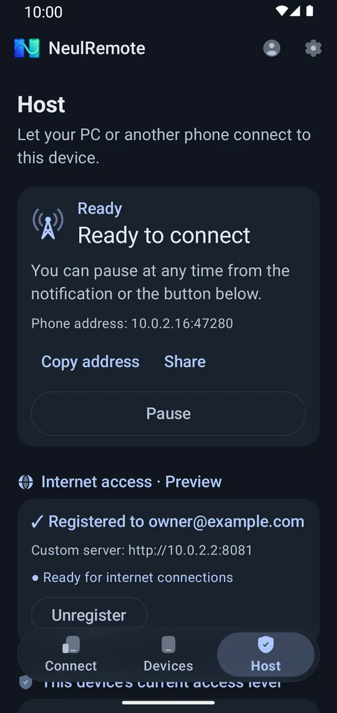
- 操作する側の デバイス タブ（Webアプリは「기기 등록」＝端末を登録）でコードを入力して 登録 します。操作される端末で同じアカウントにログインしていれば、このスマートフォンを自分のアカウントに登録 でコードなしでも登録できます。
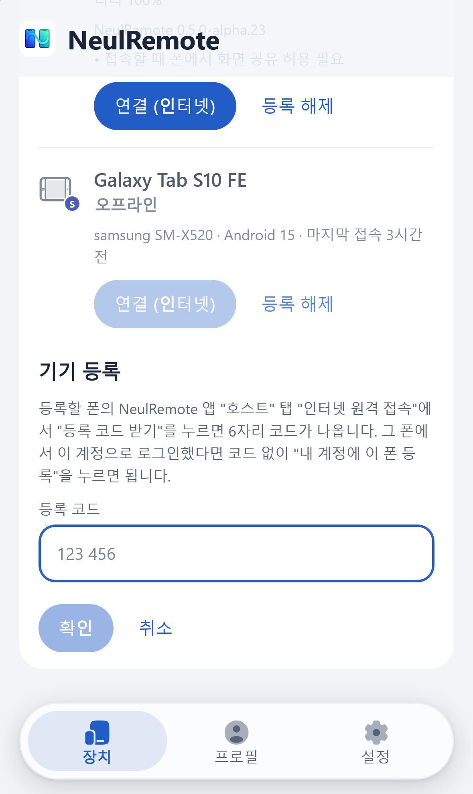